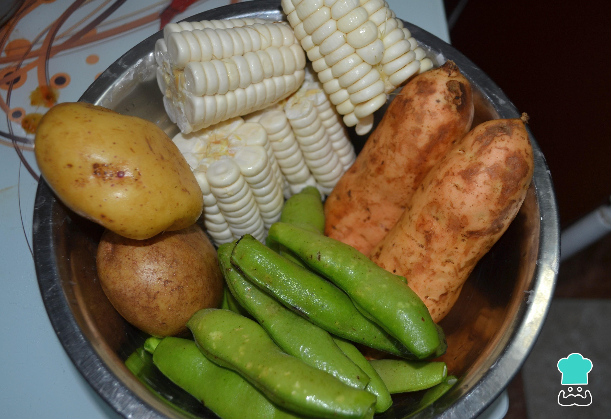

PACHAMANCA A LA OLLA

Description
The word pachamanca is a typical Peruvian dish that dates back to the Inca culture, it comes from Quechua, pacha means earth and manka means pot, so this combined word becomes "earth pot."
Ingredients
- ½ kilogram of pork belly
- ½ kilogram of chicken
- ½ kilogram of beef (strip roast)
- 1 cup of chicha de jora
- ½ cup of black beer
- 30 milliliters of red vinegar
- ½ cup of aji panca paste
- 2 whole yellow chili peppers
- 6 cloves of garlic
- 4 chincho branches
- 4 huacatay branches
- 4 branches of coriander
- 3 muña branches
- 2 sprigs of mint
- 1 pinch of salt
- 1 pinch of cumin
- 1 pinch of black pepper
- 3 purple sweet potatoes
- 3 medium white potatoes
- 3 corn or corn
Steps
- If you are wondering how to prepare pachamanca in the pot, this recipe is for you. To start with the pachamanca recipe in the pot, first in a glass or metal container, you must add the liquid ingredients, such as black beer, chicha de jora and red vinegar.
- In the blender glass, place the aromatic herbs (huacatay, chincho, muña, mint and cilantro). Then, add a little panca chili and yellow chili. In the case of yellow chili, you can cut it by removing the seeds and veins. Next, blend until the ingredients are mixed, also add the garlic clove.
- In a container, add all the meat on the ingredients list and add the previously blended mixture. Next, cover with plastic wrap and put it in the refrigerator for approximately 24 hours.
- Wash the tubers with plenty of water. Especially potatoes and sweet potatoes.

- After 24 hours, place all the meat in a large pot as a base and on top of it the tubers (potato and sweet potato) and, lastly, the whole corn and beans. Next, add the remaining liquid to the container where the meat was. What do you think of pachamanca in Peruvian pot?
- Cover the preparation with the herbs and cook all the ingredients for approximately 1 hour and a half over medium heat.
- After time, remove the herbs and with the help of tongs, serve each dish.
visit our other recipes on our page